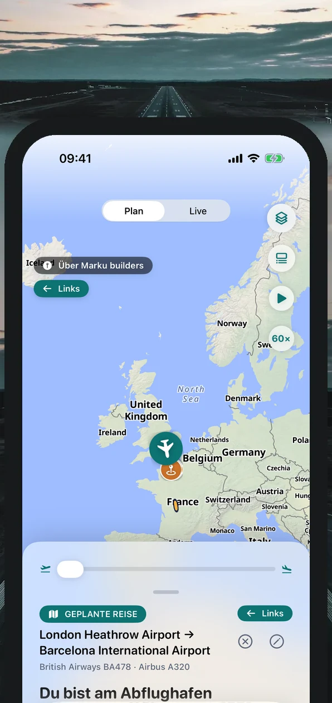
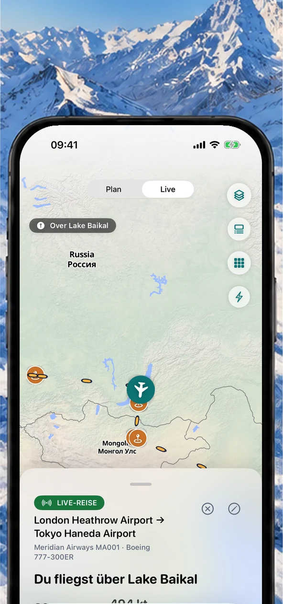
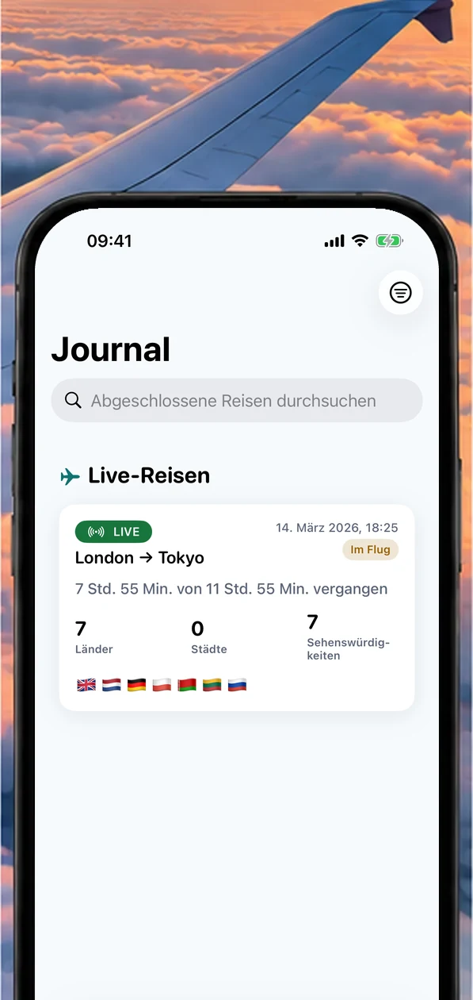
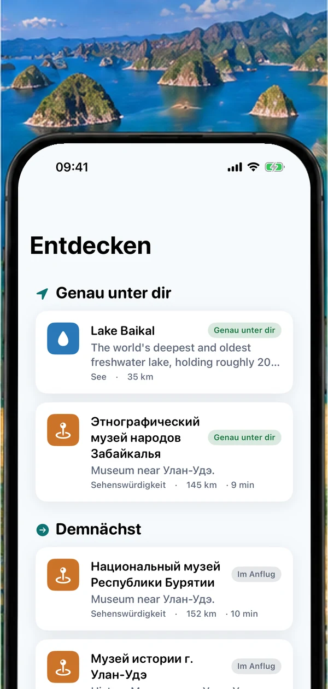
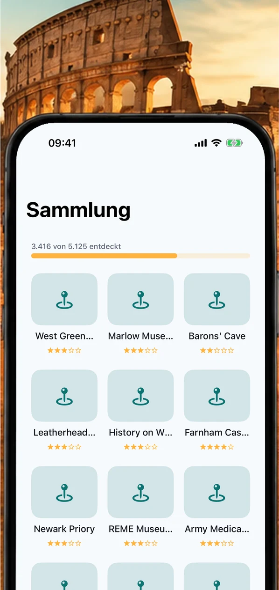
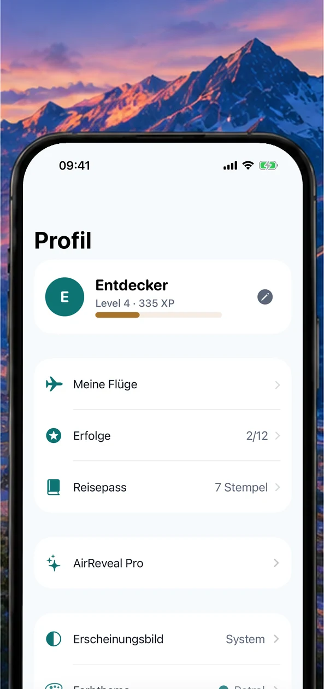
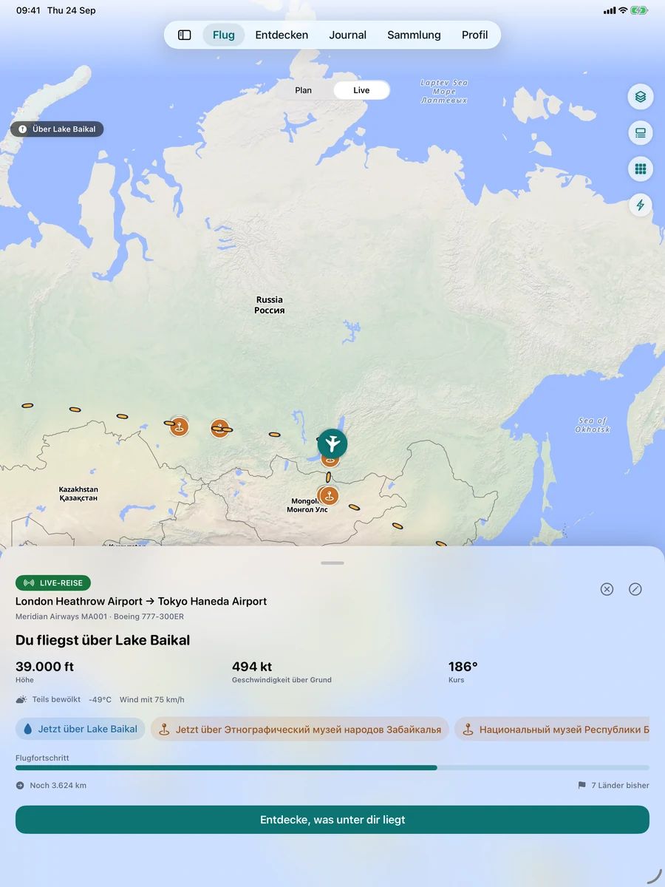
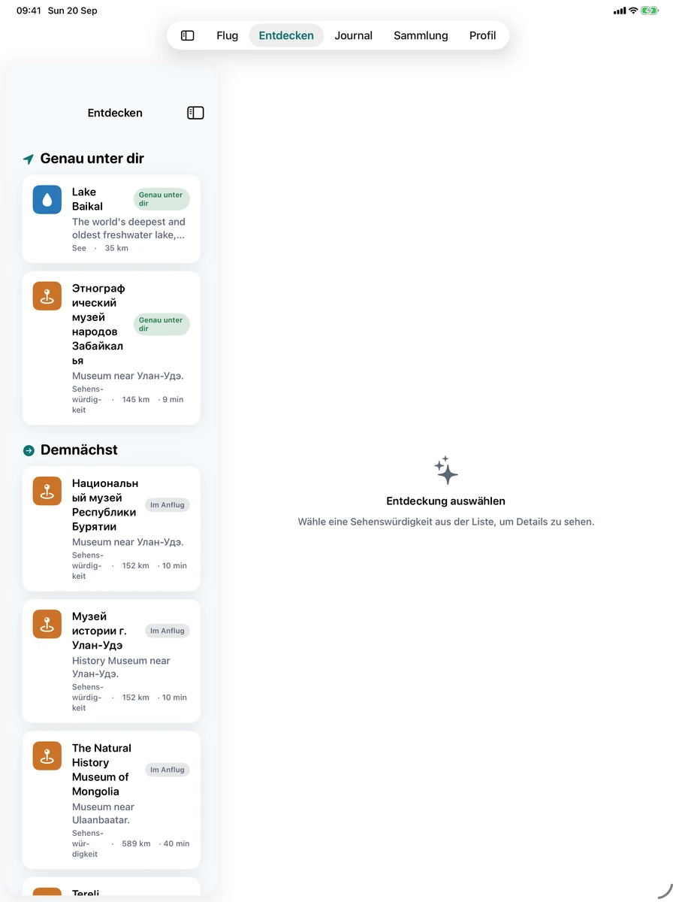
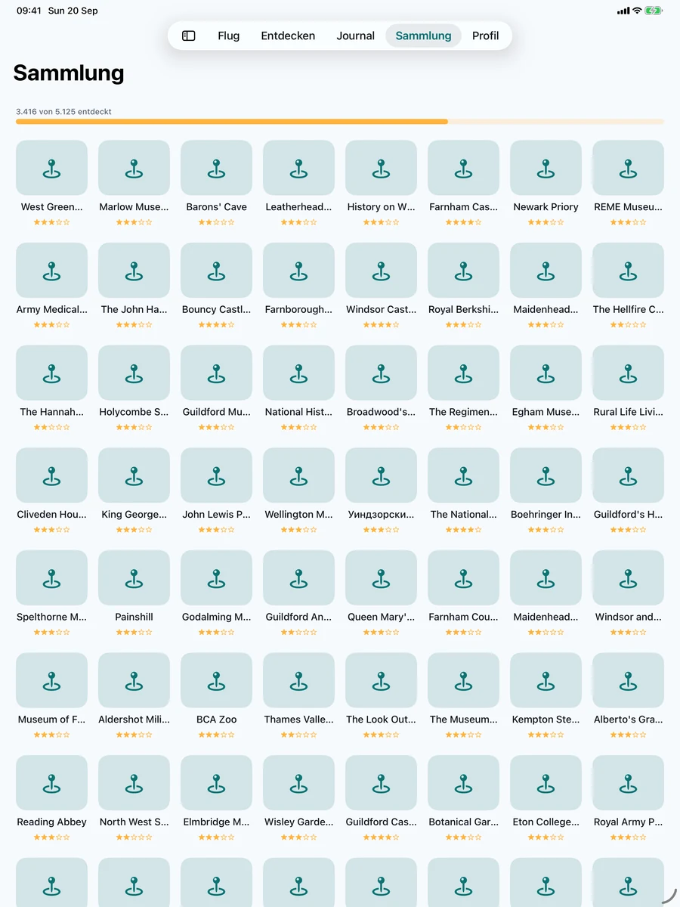

Plane jeden Flug
Sieh dir deine Route an, noch bevor du am Flughafen ankommst, und spule durch die ganze Strecke, um zu sehen, was vor dir liegt.
Sieh, was du überfliegst, finde heraus, aus welchem Fenster du schauen solltest, teste dein Wissen mit Quizfragen zu jedem Ort und bewahre jede Reise in deinem Flugjournal auf. Für alle, die sich schon einmal gefragt haben, was da unten ist.



Wo du bist, was unter dir liegt und ein bisschen Wissenswertes dazu – in einer ruhigen App, die in jedem Alter leicht zu bedienen ist.
Sieh dir deine Route an, noch bevor du am Flughafen ankommst, und spule durch die ganze Strecke, um zu sehen, was vor dir liegt.
Live-Flugverfolgung, schöne Karten und atemberaubende Aussichten – auch offline.
Faszinierende Sehenswürdigkeiten, Städte und Naturwunder in Echtzeit.

Erlebe deine Reisen noch einmal und sammle die Orte, die sie besonders gemacht haben.
Verwandle deine Reisen in eine persönliche Weltkarte.

Spiele Quiz zu Sehenswürdigkeiten und Entdeckungs-Bingo, sammle Erfolge und stemple deinen Reisepass.

Du musst nichts über Flugzeuge wissen, um AirReveal zu genießen. Wenn du dich je gefragt hast, was da unten ist, ist die App für dich.
Flughöhe, Geschwindigkeit über Grund und Kurs, dein Flugzeugtyp und deine Flugnummer sowie ein Logbuch aller deiner Reisen.
Selbst die Strecke, die du jede Woche fliegst, führt über etwas Neues. Vor dem Einsteigen laden und den Fortschritt auf einen Blick auf dem Sperrbildschirm sehen.
Teilt euch das Fenster mit Entdeckungs-Bingo und kurzen Quizfragen. Abwechselnd raten, um die Wette eine Reihe vollmachen und nach der Landung die Reisezusammenfassung teilen.
Drei kurze Fragen zu jeder Sehenswürdigkeit, Erfolge zum Freischalten und ein Stempel im Reisepass für jedes überflogene Land. Klare, einfache Bildschirme ohne Fachchinesisch und Text, der mit deinen Geräteeinstellungen größer wird.
Ein anpassungsfähiges Erlebnis rund um das Gerät in deiner Hand – vom kurzen Blick auf dem iPhone bis zur großen Flugkarte auf dem iPad.



Jeder Fensterplatz wirft dieselbe Frage auf. AirReveal beantwortet sie: deine Live-Position auf der Karte, die Sehenswürdigkeiten, Städte und Naturwunder unter und vor deinem Flugzeug und was als Nächstes kommt.
Echte Sehenswürdigkeiten entlang deiner Route, benannt, sobald du sie überfliegst – mit dem GPS deines Geräts.
Erfahre, ob eine Sehenswürdigkeit oder die Sonne zur Goldenen Stunde links oder rechts liegt, damit du das richtige Fenster wählst.
Eine Offline-Flugkarte, die nur GPS braucht. Lade die Inhalte deines Flugs vor dem Abflug herunter, und du bist bereit.
Speichere jeden Flug, sammle die Orte, die du gesehen hast, und stempel deinen Länderpass.
Öffne AirReveal: Die App bestimmt mit dem GPS deines Geräts deine Position auf der Karte und benennt die Sehenswürdigkeiten, Städte, Küsten und Naturwunder unter und vor deinem Flugzeug – in Echtzeit.
Ja. Die Live-Verfolgung nutzt das GPS deines Geräts, das weder WLAN an Bord noch Mobilfunk braucht. Lade die Offline-Inhalte eines Flugs vor dem Abflug herunter, damit Karten und Sehenswürdigkeiten für die Reise bereitstehen.
AirReveal sagt dir, ob eine Sehenswürdigkeit oder die Sonne zur Goldenen Stunde links oder rechts von deinem Flugzeug liegt, damit du weißt, aus welchem Fenster du schauen musst.
Nein. AirReveal ist ein persönlicher Begleiter für die Reise selbst. Es ist kein offizieller Flugstatus-, Flugverkehrs- oder Flugsicherheitsdienst – informiere dich bei deiner Airline und am Flughafen über Gates, Verspätungen und Anweisungen der Crew.
Ja. Speichere jeden Flug in deinem Journal, sammle die entdeckten Sehenswürdigkeiten, stempel deinen Länderpass und verfolge deinen Fortschritt mit Erfolgen.
Überhaupt nicht. Gib an, von wo nach wo du fliegst, und AirReveal erledigt den Rest. Unsere Anleitung (auf Englisch) führt dich Schritt für Schritt durch die App und erklärt Begriffe und Abkürzungen, die dir begegnen können.
Du kannst Flüge kostenlos planen und in der Vorschau ansehen und deinen ersten Flug live verfolgen. AirReveal Pro schaltet die fortlaufende Live-GPS-Verfolgung und das volle Erlebnis an Bord frei.
Plane und sieh Flüge in der Vorschau an und erkunde das Erlebnis vor dem Abflug.
Schalte die fortlaufende Live-GPS-Verfolgung und das volle Erlebnis an Bord frei.
Die Preise werden im App Store in deiner Währung angezeigt.
AirReveal kommt bald in den App Store für iPhone und iPad.